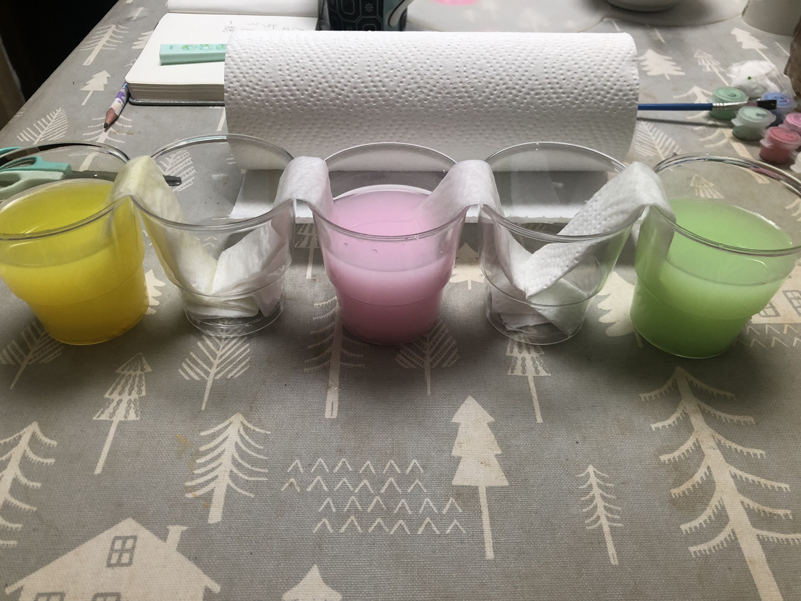
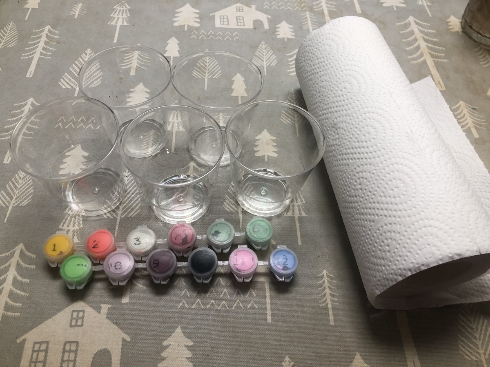
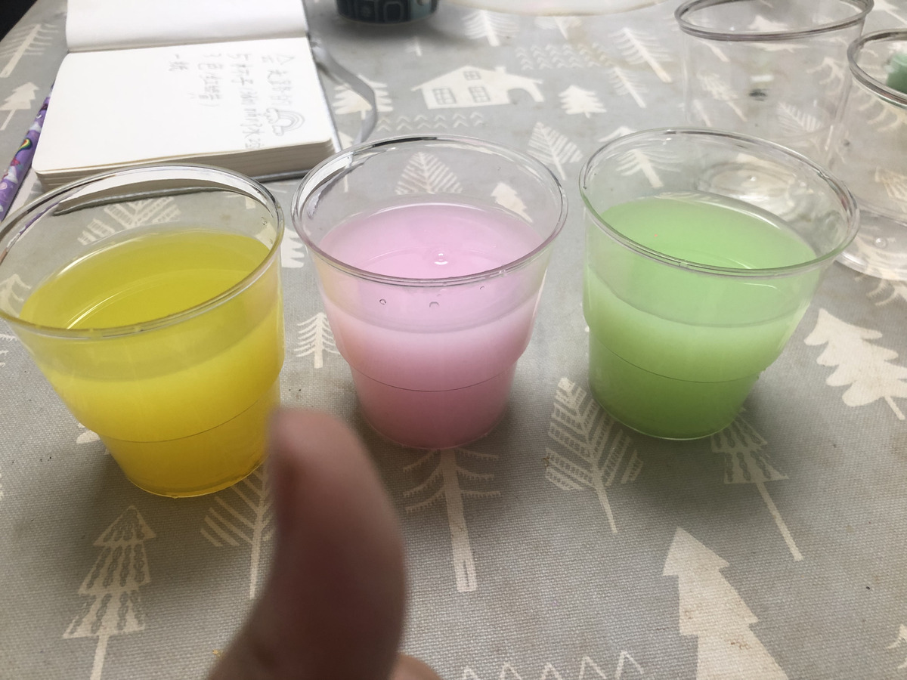
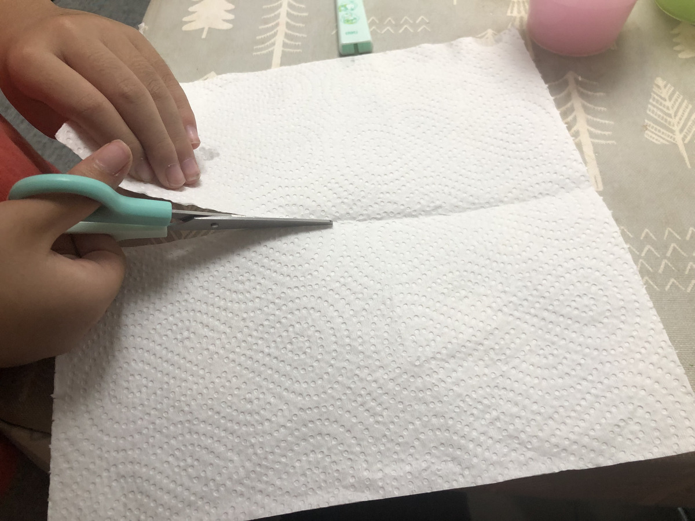
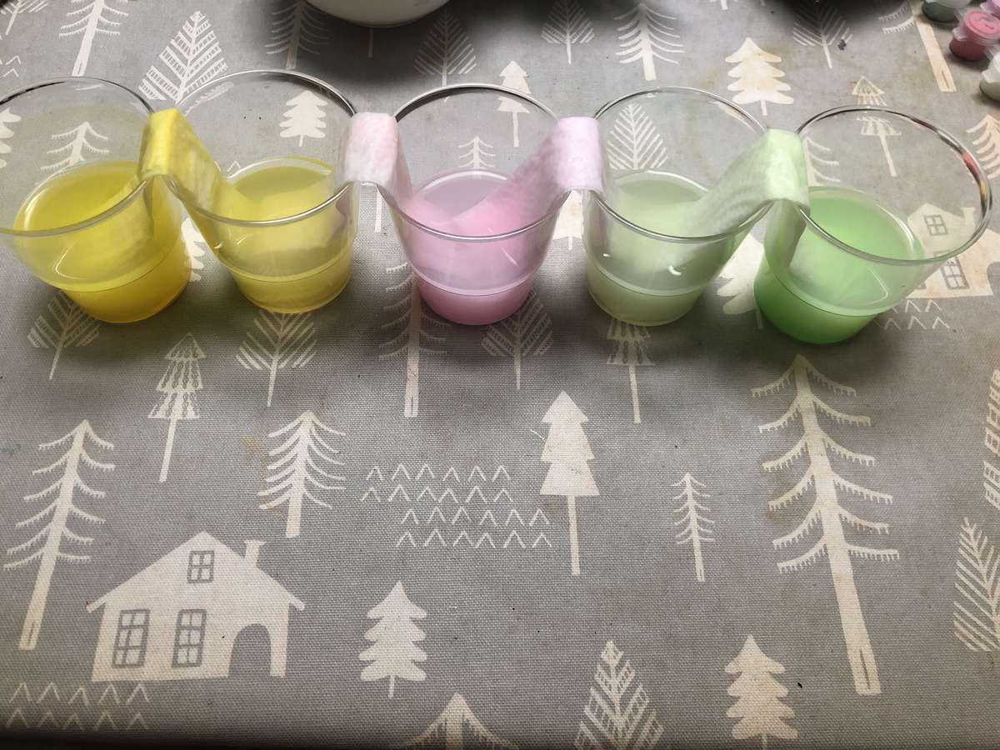
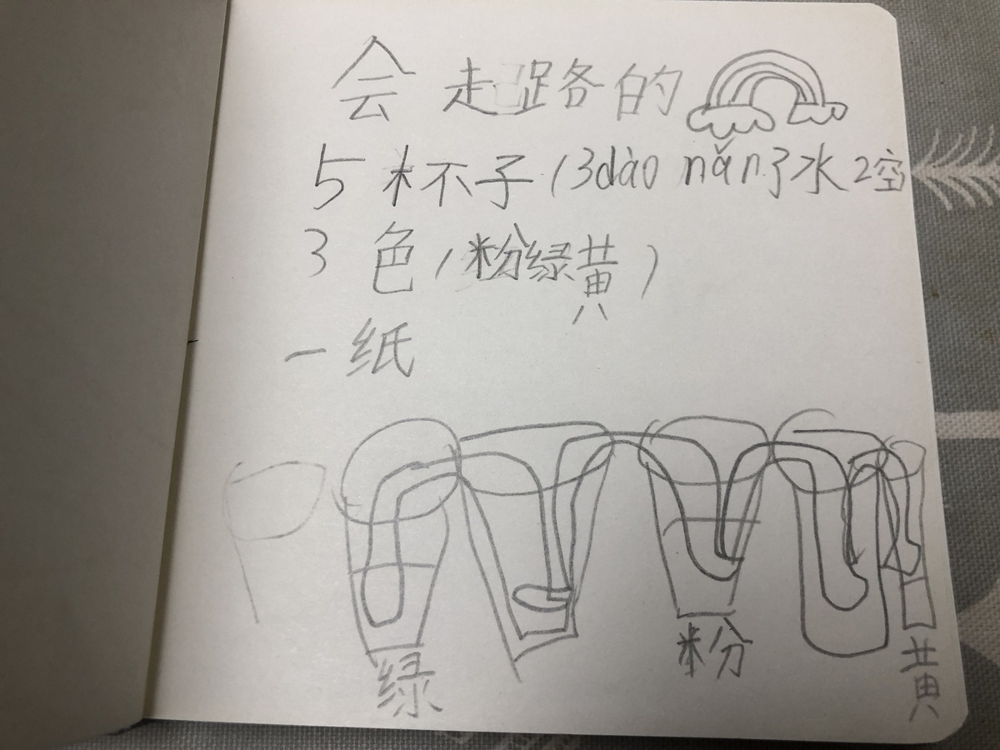

小龙包的厨房物理实验室 · W02
水真的会
“爬山坡”？
我们造了座彩虹桥
5 个杯子 · 4 座纸桥 · 一夜奇迹
真实亲子实验记录左滑看水怎么走 →

5 个杯子 · 4 座纸桥 · 一夜奇迹
5 个透明杯、3 瓶色素、厨房纸和水。她自己摆杯、倒水、调出粉黄绿。


厨房纸里藏着无数根看不见的“小吸管”。水分子贴着纤维，一拉一牵地翻过杯沿。

原本干爽的两个空杯积满了“走过来”的水。流动没有无休止——接近平衡，它就慢慢停下。

彩虹、白云、5 个杯子和 4 座桥——她画出了自己真正看懂的实验。

“把三个颜色的纸桥，都搭进同一个空杯，会混出什么颜色？”
每周六，和 7 岁女儿在厨房
造一个真实可触摸的物理世界。